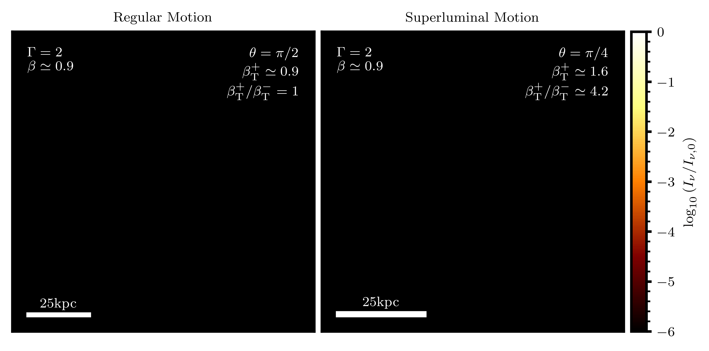
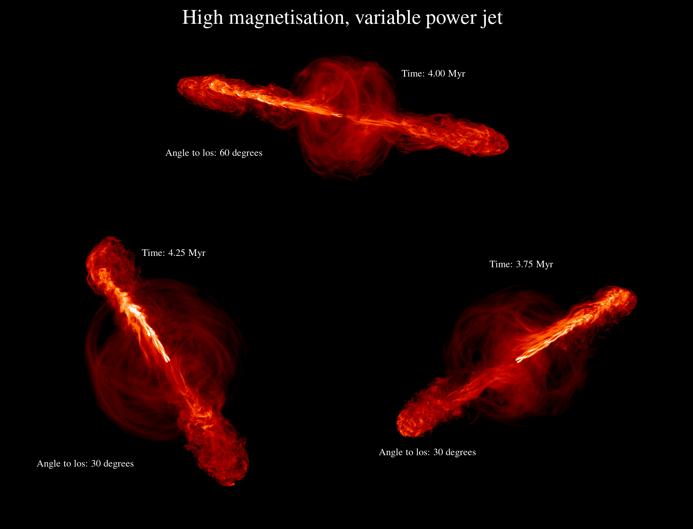

cuDART documentation
cuDART is a relativistic ray-tracing code designed to generate synthentic observations via line-of-sight summation of optically thin emission.
Generating such visualisations, especially from arbitrary viewpoints, can prove very expensive due to the large number of cells that a line-of-sight may intersect with.
In cuDART two acceleration structures are implemented to triviliase this computation: GPU acceleration and DDA, the Digital Differential Analyzer.
DDA allows for iterative low-cost propagation of rays through regular Cartesian meshes, cuDART uses the CUDA toolkit to perform ray propagation and summation exceptionally quickly.
cuDART allows the computations including relativistic boosting, and supports a finite speed of light, allowing for geometric effects such as superluminal motion to be recovered.
cuDART is capable to forming composite renderings from an arbitrary number of sub-domains, with locally fixed resolution but globally variable.
{kind=link}

Animation showing synthetic radio observations of mock data featuring relativistic twin ejecta launched at angles of 90 and 45 degrees to the line-of-sight
(left and right panels respectively). In both panels, each of the ejecta has the same absolute velocity, but display different observed transverse velocities.
cuDART automatically accounts for relativistic effects (the ejectum pointed toward the observer is brigther by relativistic beaming), and geometric effects
(the approaching ejectrum exhibits a greater transverse velocity and is deformed along the line-of-sight).
{kind=link}

Synethic radio observations of hydrodynamic simulation data, highly magnetised, variable power jet launched from an Active Galactic Nucleus, viewed from three different orientations. Relativistic beaming results in a brighter advancing jet and dimmer receding jet; this effect is strongest when the jet is more closely aligned with the line-of-sight. Simulation data featured in Elley at al. 2026 (NASA ADS).
The workhorse of the code is written in C++/CUDA, but Python scripts are provided for user ease on the frontend. The code is available on GitHub.
Please report any issues and suggestions for improvement here. Development for cuDART is use-case driven; if there are projects that you think may benefit from this code, but requires additional features
please get in touch with the authors.
Publications
Earlier iterations of this codebase have been use to generate synethic observations for the following publications:
Development
Authors and contributors to the cuDART code and their institutions are:
- Henry Whitehead
DPhil candidate, Department of Physics, Astrophysics, University of Oxford, Denys Wilkinson Building, Keble Road, Oxford, OX1 3RH, UK